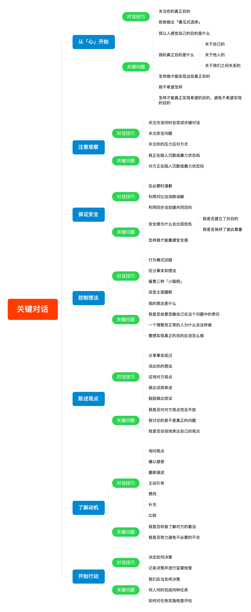

为了更好的 SEO，把大纲放在下边。读者也可根据大纲自行绘制自己的脑图。
1
2
3
4
5
6
7
8
9
10
11
12
13
14
15
16
17
18
19
20
21
22
23
24
25
26
27
28
29
30
31
32
33
34
35
36
37
38
39
40
41
42
43
44
45
46
47
48
49
50
51
52
53
54
55
56
57
58
59
60
61
62
63
64
65
66
67
68
69
70
71
72
73
74
75
76
77
78
79
| 从「心」开始
对话技巧
关注你的真正目的
拒绝做出「傻瓜式选择」
关键问题
我让人感觉自己的目的是什么
我的真正目的是什么
关于自己的
关于他人的
关于我们之间关系的
怎样做才能实现这些真正目的
我不希望怎样
怎样才能真正实现希望的目的，避免不希望实现的目的
注意观察
对话技巧
关注交谈何时会变成关键对话
关注安全问题
关注你的压力应对方式
关键问题
我正在陷入沉默或暴力状态吗
对方正在陷入沉默或暴力状态吗
保证安全
对话技巧
在必要时道歉
利用对比法消除误解
利用四步法创建共同目的
关键问题
安全感为什么会出现危机
我是否建立了共目的
我是否保持了彼此尊重
怎样做才能重建安全感
控制想法
对话技巧
行为模式回顾
区分事实和想法
留意三种「小聪明」
改变主观臆断
关键问题
我的想法是什么
我是否故意忽略自己在这个问题中的责任
一个理智而正常的人为什么会这样做
要想实现真正的目的应该怎么做
陈述观点
对话技巧
分享事实经过
说出你的想法
征询对方观点
做出试探表述
鼓励做出尝试
关键问题
我是否对对方观点完全开放
我讨论的是不是真正的问题
我是否自信地表达自己的观点
了解动机
对话技巧
询问观点
确认感受
重新描述
主动引导
赞同
补充
比较
关键问题
我是否积极了解对方的看法
我是否努力避免不必要的不合
开始行动
对话技巧
决定如何决策
记录决策并进行监督检查
关键问题
我们应当怎样决策
何人何时完成何种任务
如何对任务实施检查评估
|